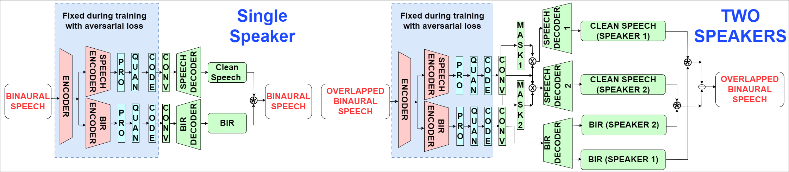
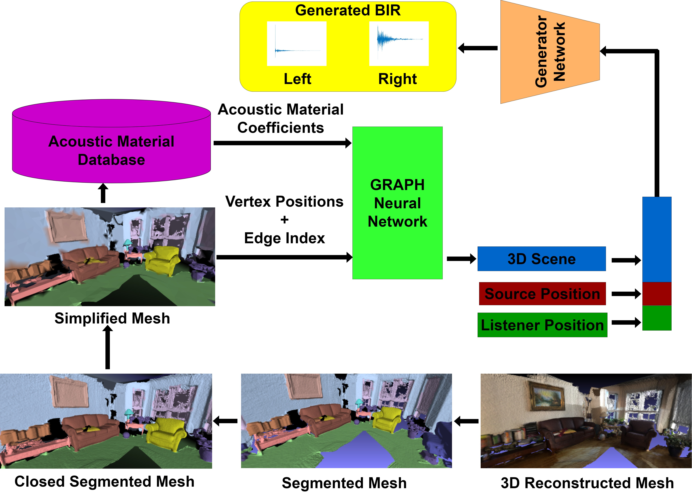
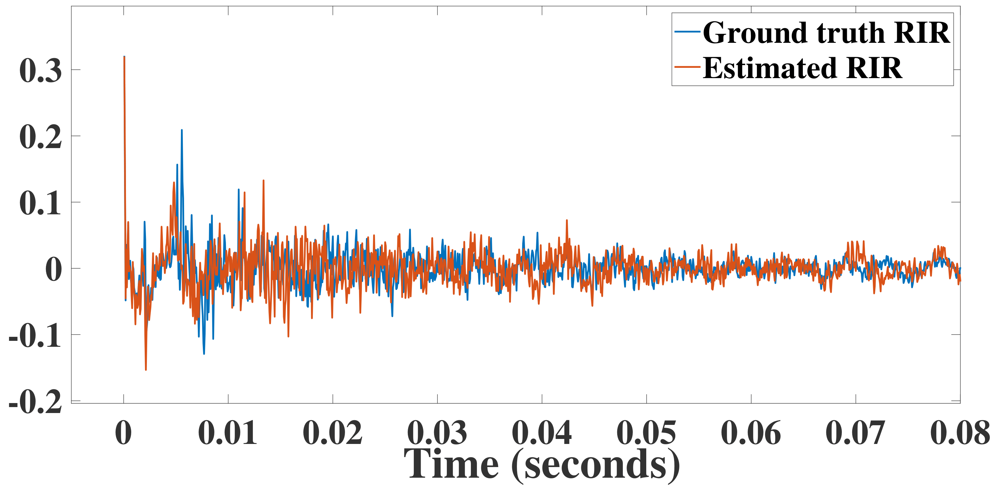
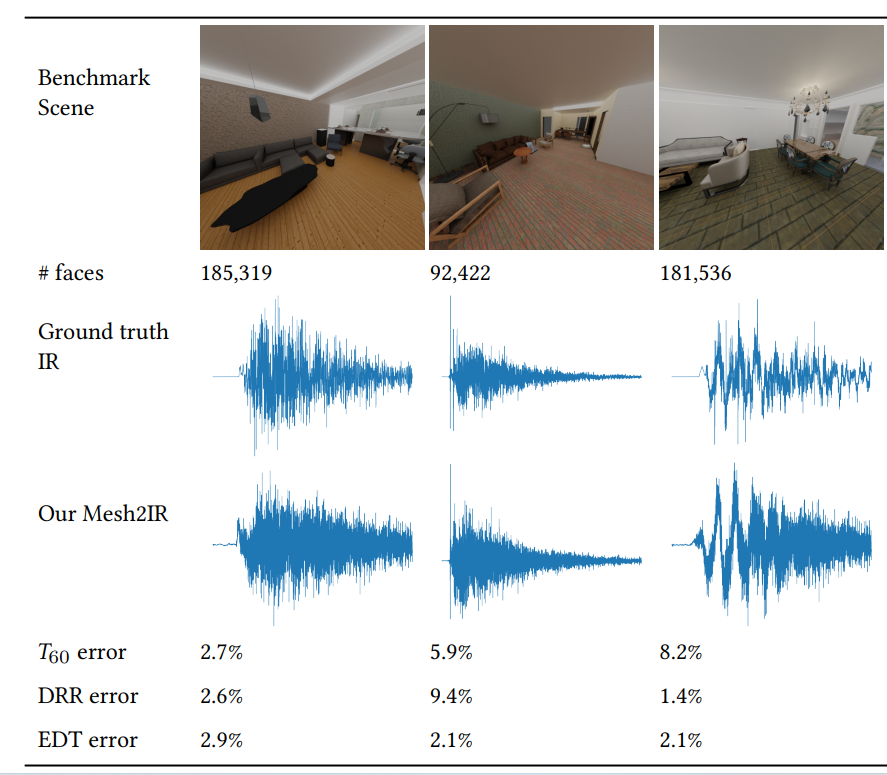
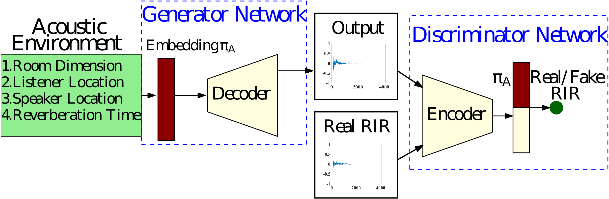

Anton Jeran Ratnarajah
I am a 5th PhD student in Electrical and Computer Engineering at University of Maryland-College Park advised by Prof. Dinesh Manocha. I am broadly interested in building machine learning models to create high quality sound experience in interactive applications. My current line of research is learning-based sound synthesis and propogation for AR and VR applications and audio/speech processing applications.
Research
|  |
M3-AUDIODEC: MULTI-CHANNEL MULTI-SPEAKER MULTI-SPATIAL AUDIO CODEC |
|  |
Listen2Scene: Interactive material-aware binaural sound propagation for reconstructed 3D scenes |
|  |
Towards Improved Room Impulse Response Estimation for Speech Recognition |
|  |
MESH2IR: Neural Acoustic Impulse Response Generator for Complex 3D Scenes |
|  |
FAST-RIR: FAST NEURAL DIFFUSE ROOM IMPULSE RESPONSE GENERATOR |
 |
IR-GAN: Room impulse response generator for far-field speech recognition |
 |
TS-RIR: Translated synthetic room impulse responses for speech augmentation |
 |
IMPROVING REVERBERANT SPEECH SEPARATION WITH MULTI-STAGE TRAINING AND CURRICULUM LEARNING |
 |
Moving Object Based Collision-Free Video Synopsis |
Education
 |
University of Maryland - College Park, College Park, MD, USA |
 |
University of Moratuwa, Moratuwa, Sri Lanka |
Work Experience
 |
Research Intern |
|
Research Scientist Intern |
|
|
Research Intern |
 |
Engineer |
 |
Research Intern |
Teaching Experience
|
ENEE 245: Digital Circuits and Systems Laboratory |